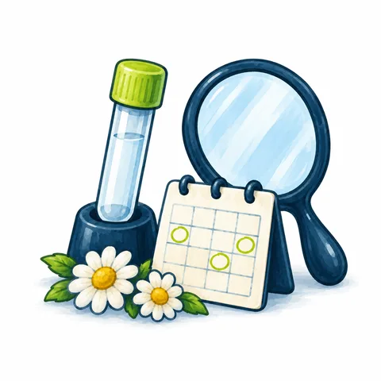

Общий анализ крови развёрнутый
Самый частый анализ: с него начинают проверку здоровья. Готово через 1 день.
350 ₽470 ₽
Собственная лаборатория в Черкесске и 29 пунктов рядом с домом.
Бесплатный выезд медсестры при заказе от 1 500 ₽
Черкесск, пр-т Ленина, 148 · открыто до 19:00
Самый частый анализ: с него начинают проверку здоровья. Готово через 1 день.
4 анализа: общий анализ крови, железо, ферритин, трансферрин. Готово через 2 дня.
На анализы из каталога, если оплатить заказ онлайн.
19 предложений: акции месяца, выгодные чек-апы и постоянные скидки.
Сроки и условия акций уточняйте по телефону 8 800 201 78 30.
Найдите его по названию в поиске или в разделах. Если не знаете, какой анализ нужен, позвоните: 8 800 201 78 30.
Подготовка указана в описании анализа. Выезд медсестры на дом — бесплатно при заказе от 1 500 ₽.
Срок указан у каждого анализа. Результат — в личном кабинете или в пункте.
Выстроенные процессы и протоколы, опыт работы с лабораторными сетями по всей стране.
Каждый день к нам обращаются тысячи человек.
Черкесск, Усть-Джегута, Зеленчукская и другие населённые пункты в 9 регионах.
Результаты — в личном кабинете и на e-mail, как только будут готовы.
От общих анализов крови и мочи до гормональных, биохимических и онкологических панелей.
Запись на конкретное время — без звонков и очереди. Медсестра приезжает с одноразовым стерильным набором.
Каталог собственной лаборатории с кодами, сроками и подготовкой, бланк направления и памятки для пациентов.
Здесь анализы, результат которых готов за 1–3 дня после сдачи. Если результат нужен срочно, через несколько часов, часть анализов можно сделать с доплатой — такой режим называется .
Сертификат пополняет баланс в личном кабинете получателя. Им можно оплатить любой анализ, чек-ап или выезд медсестры.
От 500 ₽, кратно 100.
На анализы из каталога при оплате заказа онлайн.
При заказе от 1 500 ₽.
Сроки и условия акций уточняйте по телефону 8 800 201 78 30.

29 пунктов в 9 регионах. Если часы не указаны, уточните их по телефону 8 800 201 78 30.
Загружаем карту…
CLD — центр лабораторной диагностики с собственной лабораторией в Черкесске. Как направлять пациентов и на каких условиях работать врачам, клиникам и санаториям, расскажет медицинский представитель.
Врач выписывает направление на бланке CLD или на своём, пациент сдаёт анализы в пункте CLD. Результат приходит в личный кабинет пациента, его можно получить и в пункте.
Для клиник и санаториев, где пробы берут на месте.
Каталог собственной лаборатории: код, что сдаёт пациент, срок и подготовка.
Расскажет, как направлять пациентов, и ответит на вопросы о работе с лабораторией.
Анализы, которые выполняет собственная лаборатория CLD в Черкесске. Нажмите на подготовку, чтобы увидеть правила целиком. Цены — в карточках анализов для пациентов.
| Исследование | Что сдаёт пациент | Срок | Подготовка |
|---|
Чек-апы — готовые наборы анализов с одной подготовкой. В наборе дешевле, чем те же анализы по отдельности. Посмотрите состав, сравните варианты и узнайте, как подготовиться.
Помощь в выборе набора — по телефону 8 800 201 78 30. Сдать набор можно и дома: выезд медсестры на дом бесплатный при заказе от 1 500 ₽.
Ежегодную проверку как раз сдают, когда ничего не беспокоит: так проще заметить изменения показателей. Какой набор нужен, определяет лечащий врач.
Подготовка указана у каждого набора и рассчитана по самому строгому анализу в составе. Чаще всего перед анализом не едят 8–12 часов. Приём лекарств перед анализом согласуйте с лечащим врачом.
Через 1–2 дня, срок указан у каждого набора. Результат появится в личном кабинете на сайте, его можно получить и в пункте.
Да. Медсестра приедет бесплатно при заказе от 1 500 ₽. Об анализах на дому
Медсестра CLD возьмёт анализы у вас дома. Подготовка, сроки и результаты — такие же, как при сдаче в пункте.
Позвонить: 8 800 201 78 30Если заказ меньше, стоимость выезда назовут по телефону.
Не нужно отпрашиваться с работы и тратить время на дорогу.
Не нужно везти человека в пункт: анализы можно заказать на его адрес.
Ребёнку спокойнее дома, а вам не нужно собирать его в дорогу.
После болезни, при ограниченной подвижности или в непогоду.
Медсестра выезжает из пунктов CLD. Приедет ли она в ваш населённый пункт, уточняйте по телефону.
Отметьте, о ком хотите позаботиться. Подберём анализы для ежегодной проверки; если есть назначение врача, сдают по нему.
В каталоге или среди чек-апов. Можно заказать по телефону 8 800 201 78 30.
В корзине выберите «Дома» и впишите адрес. При заказе по телефону назовите его оператору.
Результат появится в личном кабинете на сайте, его можно получить и в пункте CLD.
Бесплатно при заказе анализов от 1 500 ₽. Если заказ меньше, стоимость выезда назовут по телефону 8 800 201 78 30.
Список населённых пунктов уточняйте по телефону 8 800 201 78 30.
Так же, как к сдаче в пункте: правила указаны в описании каждого анализа. Приём лекарств перед анализом согласуйте с лечащим врачом.
В личном кабинете на сайте или в пункте CLD. Срок указан у каждого анализа.
Найдите анализ по названию или выберите готовый набор анализов.
Укажите адрес, куда приехать медсестре.
Приедет ли медсестра в ваш населённый пункт, уточните по телефону 8 800 201 78 30.
Имя и телефон нужны, чтобы оформить заказ и открыть результаты в личном кабинете.
Результат — в личном кабинете на сайте или в пункте CLD, где вы сдавали анализы.
CLD — центр лабораторной диагностики. Собственная лаборатория в Черкесске выполняет 99 анализов и 22 комплекса. Остальные анализы из каталога выполняют партнёрские лаборатории.
Выезд бесплатно при заказе от 1 500 ₽.
Анализы на домуВыберите анализы в каталоге и оплатите заказ онлайн.
Выбрать анализыПо телефону помогут выбрать анализ и расскажут о подготовке.
ЛО-16-01-008132 от 26.03.2020
ООО «Инновационные решения», ОГРН 1250900000515, ИНН 0900013725
Как CLD собирает, хранит и защищает персональные данные.
Оператор персональных данных — ООО «Инновационные решения», ИНН 0900013725.
Сайт использует файлы cookie и сервис веб-аналитики Яндекс Метрика, чтобы понимать, как посетители пользуются сайтом.
Обращения принимают по телефону 8 800 201 78 30.
Для врача: отметьте анализы, пациент сдаёт их в пункте CLD. Формат A5, печатается только бланк.
8 800 201 78 30
cldmed.ru
Адреса пунктов, часы работы и подготовка к анализам — на сайте cldmed.ru и по телефону 8 800 201 78 30.
Сайт использует файлы cookie и Яндекс Метрику, чтобы работать удобнее. Подробнее — в политике обработки персональных данных.